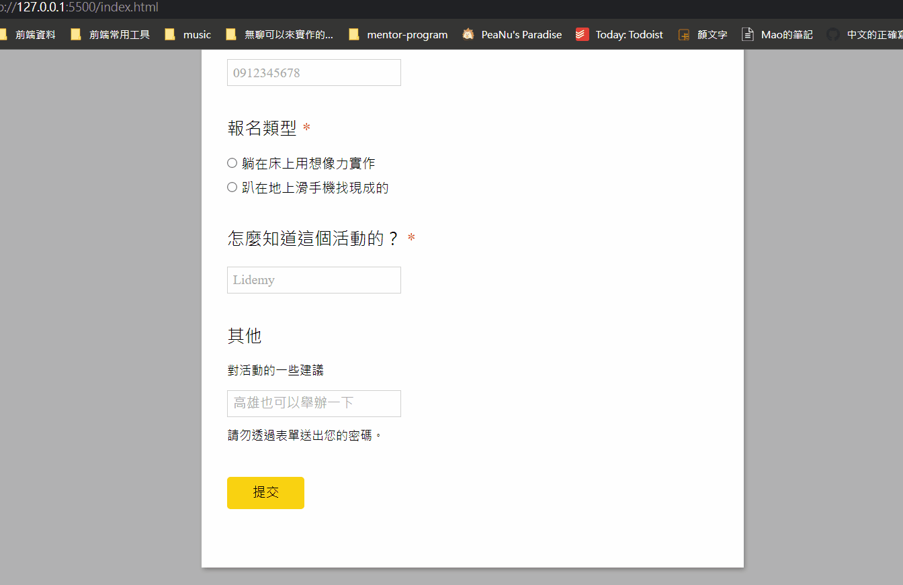
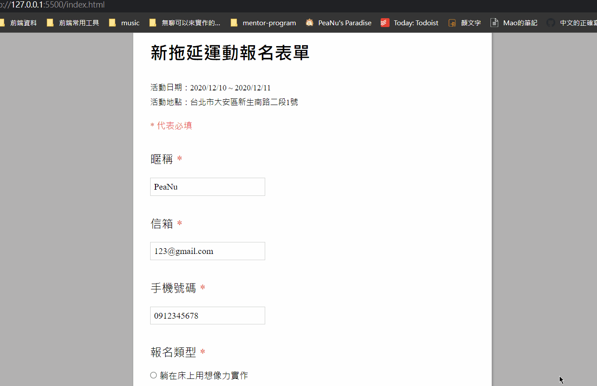

一週過的真快。
進度
今天把 [FE102] 的指定部分看完了，一如往常的做了筆記：
- 借放一下啊！localStorage 與 sessionStorage
- DOM 冷知識－在一個範圍內找出元素
- 把 Object 的 value 抽出來變成 Array
- 把 Array-like-object 變成 Array
也實作了一下以前沒有很清楚的 localStorage 跟 sessionStorage：
See the Pen localStorage 簡單使用 by PeaNu (@jubeatt) on CodePen.
最後也利用時間把 week7 的第一個作業給完成了。
錯誤判斷：

成功送出：

學到的事情
提到 localStorage 跟 sessionStorage 就讓我想到我一開始學前端時所看的書：HTML5+CSS3+jQuery Mobile輕鬆打造App與行動網站
那時候的我連 JavaScript 都還很陌生，就按照書中的範例用 localStorage 做了一個很簡單的登入系統。老實說實際上在做什麼我毫無頭緒，只是單純的按照 code 來邊抄邊練習。現在回想起來還挺懷念的，這就好像你玩遊戲轉職成遊俠後會開始懷念當初那個還是弓箭手的初心者時光。原來時間過得好快，好快。
在寫 week7 的作業時，因為要操作 DOM 來改變介面，所以一定會碰到「找到相鄰節點」這件事。我不得不吐槽一下「文字節點」真的是一個有夠雷的東西，雖然它背後也許還是有某個存在的必要，但這就跟 CSS 之 inline-block 中的魔法間距 一樣，踩到的時候心中各種「WTF」，怪不得 jQuery 的作者會把它給處理掉。
最後覺得 Code Review 也許真的是個很重要的東西，從別人的 code 真的能學到很多有趣的東西，或者是新的發現。但有些時候卻好懶得 Review，不是說不喜歡 Review 這件事本身，而是 Review 是要花時間的，所以就會陷入「到底該花時間 Review 還是趕進度」的窘境。唉～時間果然是人類的最大強敵。
題外話
在疫情還沒有越來越嚴重之前，要去跟女朋友吃鬆餅，開心！
還是希望疫情不要越來越嚴重才好，如果每個人都能好好注意就好了。
期許
希望明天可以把 week7 的作業完成，可以的話最好也把挑戰題做完。